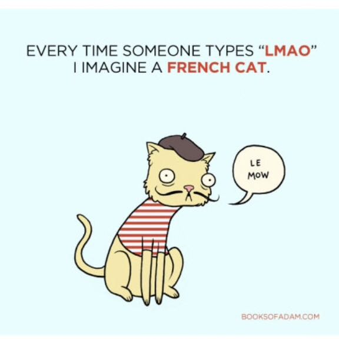

This is an example of a static website.
The internet went down hill from here, Frames were a good addition but then CSS and Javascript. Even Java applets...
remember going onto a website and your computer crunching for a couple of minutes as it loaded a VM. Bad times
Hi, my name is Oliver and I am doing a online degree in Computer science, so far it has been quite interesting.
I wish I had time to do more on each subject as the topics could all be of use to me now.
Im not a fan of Github (or others like Gitlab) as I either work alone or in a close nit team, but I am going to try and use this Github account for some of my less interesting projects.
Ones I dont mind Microsoft lifting for their AI overload. Have fun with Motorola 68000 designs that are only of interest to me!.
Anyhow this is an update for today, Ill keep updating th is page with snipits and hopefully add more projects soon too.